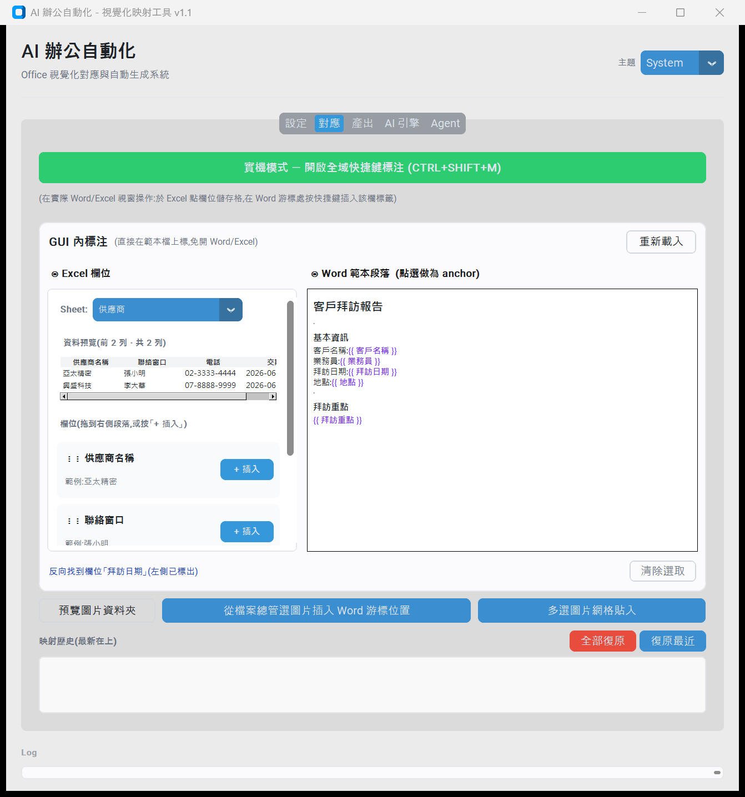
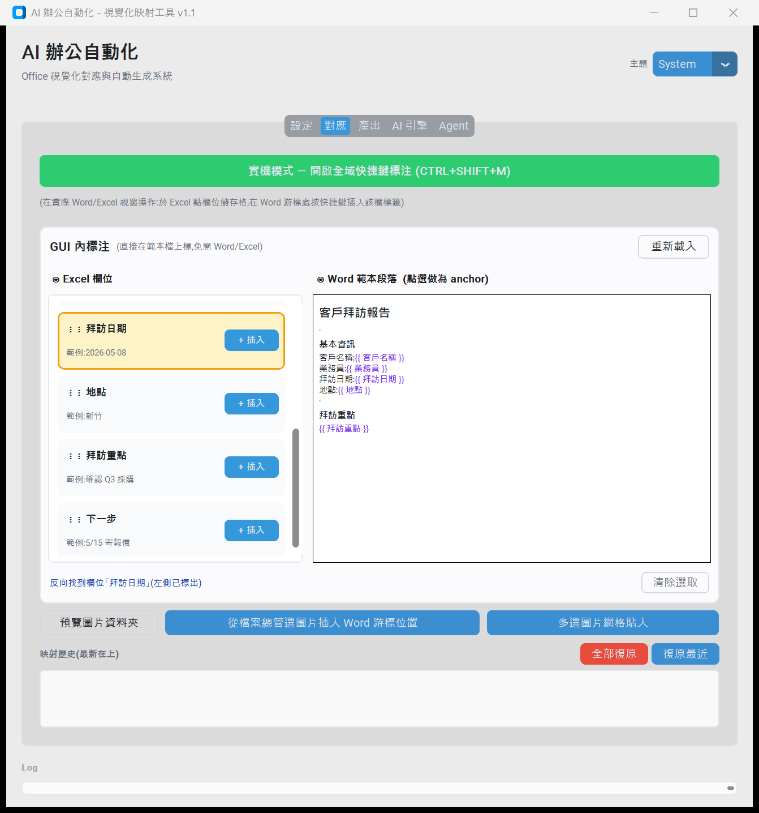
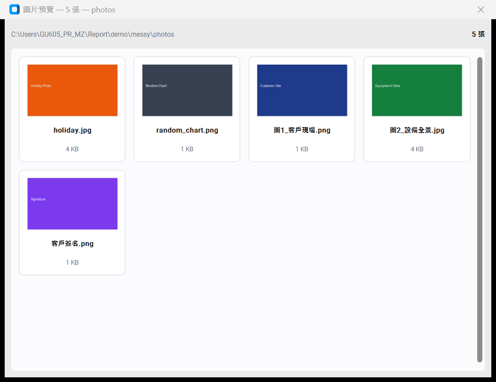
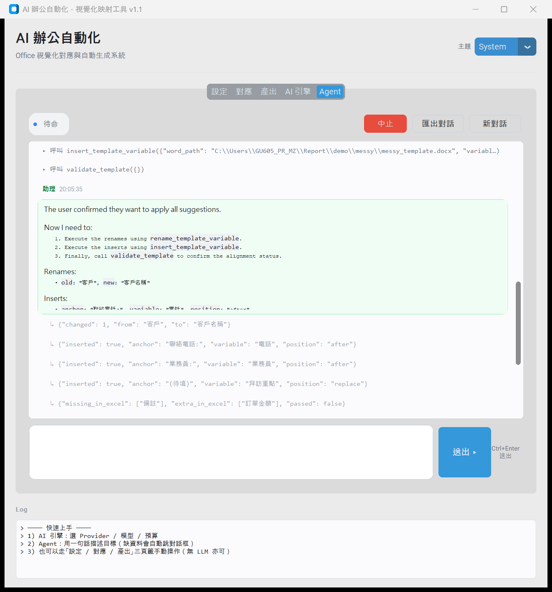
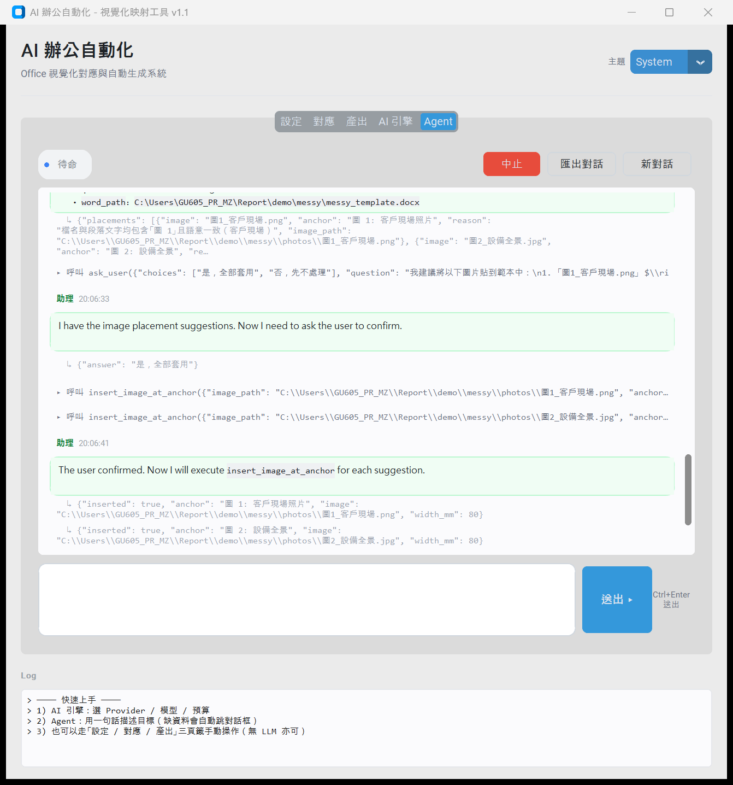
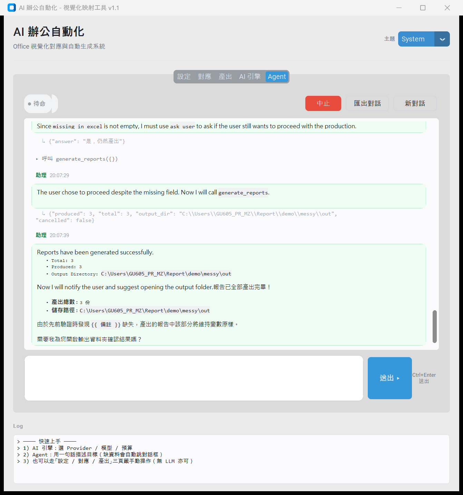

設定
Word 範本 / Excel 數據 / 工作表 / 檔名規則 / 輸出資料夾
對應 · 左右對照
左:Excel Treeview 預覽真實資料 + 欄位 list (⋮⋮ 拖拉) · 右:Word 段落 style-aware 渲染 (Title / Heading 2 / Normal)
拖拉中
Drop target 段落黃色高亮 + 浮動 tooltip 跟著游標,顯示要插入的變數名
落地後
「客戶名稱:」段落變成「客戶名稱:{{ 客戶名稱 }}」,變數紫字渲染 · 映射歷史記錄一筆
全部標完
4 次拖拉完成所有欄位映射 · 映射歷史完整紀錄 · docx 真檔已被改寫
產出
檢查範本變數 vs Excel 欄位 · 批次產出 · 進度條
AI 引擎
Gemini Provider · Planner / Reviewer = gemma-4-31b-it · 審查 rubric · 預算上限
Agent · 對話流
訊息泡泡 + 角色 badge + 時間戳 · 工具呼叫緊湊樣式 · 助理回覆走 markdown 渲染含真表格
Agent · 待命狀態
welcome card + 範例 prompt chips(點擊填入)· 狀態 pill(● 待命)
多 sheet 切換
Excel 有多個 sheet 時 OptionMenu 自動出現,切換立刻重抓 Treeview + 欄位 list切到「供應商」sheet
資料完全換成供應商欄位(供應商名稱/聯絡窗口/電話/交期),欄位 list 同步更新
反向高亮 · Word 變數 → Excel 欄位
點 Word pane 中的 {{ 拜訪日期 }} → 對應左側「拜訪日期」row 自動 scroll 到並黃底橘框 flash 2 秒
圖片資料夾預覽
CTkToplevel 4 欄縮圖 grid · 顯示檔名 + 大小 · 標題列含資料夾路徑與張數
Agent E2E · Messy 資料對齊
Word 變數命名與 Excel 對不齊 → Agent 呼 suggest_mappings + rename + insert + 用 replace 把「(待填)」換成變數 + validate 顯示 missing
Agent E2E · 圖片資料夾混雜
5 張圖混雜(2 對應 + 3 雜物) → suggest_image_placements 只配相關的 2 張,主動忽略無關圖 · ask_user 確認後 insert_image_at_anchor × 2
Agent E2E · 反問 + 主動提醒
validate 偵測 {{ 備註 }} 缺對應 Excel 欄 → ask_user 反問是否繼續 · 產出後最終回覆主動加 caveat 並詢問下一步